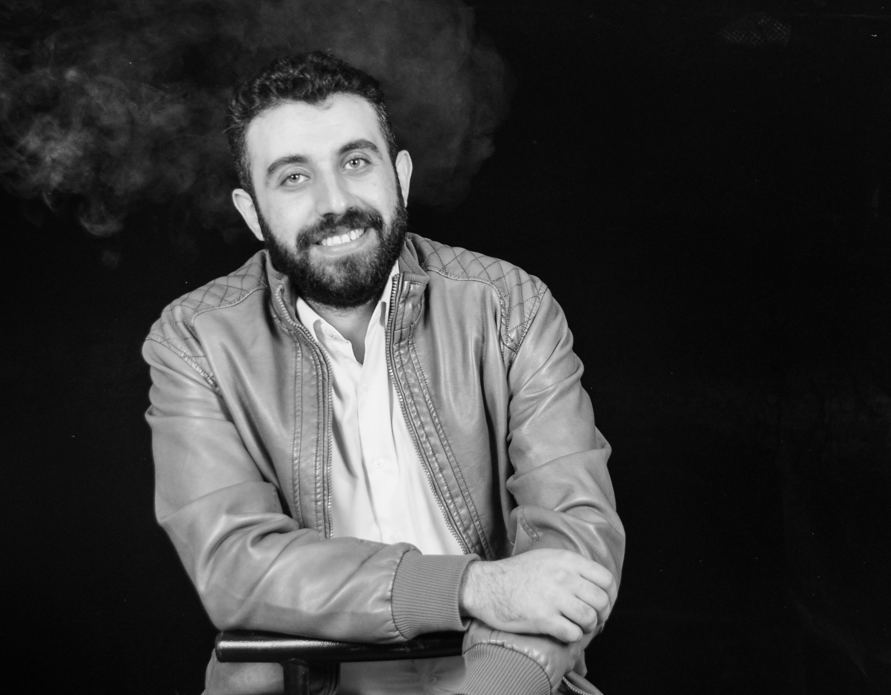

Assistant Professor
Diaeddin Rimawi
Research interests: software engineering, computer vision, process mining, and cybersecurity.
About Me
Overview
Diaeddin Rimawi is an Assistant Professor (RTDa) at the Faculty of Engineering of the Free University of Bozen-Bolzano, funded by the European Social Fund Plus (FSE+) within the D2PAM project. Working with Professor Oswald Lanz and Professor Marco Montali, his research focuses on combining data-driven learning with symbolic process mining to study procedural activity understanding from multimodal streams. He teaches computer vision, cybersecurity, software and systems security, and software quality at bachelor's, master's, and doctoral levels.
Before this position, Diaeddin was a Technologist at the university’s Cybersecurity Laboratory (CSLab), where he managed the lab’s research infrastructure, including the Cyber Range and threat-analysis platforms. He supported ongoing research activities, contributed to project proposals, advised on cybersecurity technologies, and helped develop teaching materials while mentoring master’s students.
Diaeddin holds a PhD in Advanced-Systems Engineering from the Free University of Bozen-Bolzano, funded by a PON scholarship for innovation. Under the supervision of Professor Barbara Russo and Professor Antonio Liotta, his doctoral research introduced the concept of Green Resilience in Smart Cyber-Physical Systems. He developed decision-making policies based on optimization, game theory, and reinforcement learning to support the green recovery of Online Collaborative AI Systems (e.g., collaborative robots) when facing disruptive events.
Earlier in his career, he served as a University Instructor at Birzeit University, led instructional programs as Head of Instructors at AXSOS Academy, and worked as a Software Engineer at ASAL Technologies within the NVIDIA MFT Team. These roles provided him with experience across teaching, software development, and applied engineering, helping him bridge academic research with real-world practice.
Name: Diaeddin Rimawi
Birthday: 28 September
Degree: PhD in Advanced-Systems Engineering
Experience: Since 2014
Email: diaeddin.rimawi@unibz.it
Address: Bolzano, Italy
Education & Experience
My Education
Ph.D. in Advanced-Systems Engineering
Free University of Bozen-Bolzano | Jan 2022 - May 2025
Topic: Green Resilience of Smart Cyber-Physical Systems
Published Works:
- GResilience: Decision-Making Policies for Trading Off Greenness and Resilience in Online Collaborative AI Systems, 2025
- Modeling Resilience of Collaborative AI Systems, 2024
- CAIS-DMA: A Decision-Making Assistant for Collaborative AI Systems, 2023
- GResilience: Trading Off Between the Greenness and the Resilience of Collaborative AI Systems, 2023
- Green Resilience of Cyber-Physical Systems, 2022
MSc in Software Engineering
Birzeit University | 2015 - 2020
Attended the Software Engineering Summer School at the University of Koblenz-Landau, Germany, in July 2016.
Published two papers on using static code analysis to identify design-pattern usage in Android applications.
Bachelor in Computer Science
Birzeit University | 2010 - 2014
Served as president of the Computer Science Students Club.
Served as a member of the College Council.
Secondary School of Science
Basheer Al-Bargouthy Secondary School | 2010
My Experience
Assistant Professor (RTDa)
Free University of Bozen-Bolzano | Nov 2025 - Present
Assistant Professor funded by the European Social Fund Plus (FSE+), working on the D2PAM – Data-driven Procedural Activity Mining from Multi-modal Streams project.
Teaching Cybersecurity to students in the PhD Programme in Advanced-Systems Engineering.
Teaching Software and Systems Security and Software Quality and Metrics to students in the Master in Software Engineering.
Teaching Introduction to Computer Vision to students in the Bachelor in Computer Science and the Bachelor in Electronics and Cyber-Physical Systems Engineering.
Cybersecurity Technologist
CSLab at Free University of Bozen-Bolzano | Jan 2025 - Nov 2025
Cybersecurity Technologist at the Cybersecurity Laboratory (CSLab).
Managed the laboratory's activities and core platforms, including the Cyber Range, threat-intelligence tooling, and vulnerability sharing through MISP. Advised on technologies, contributed to project proposals and funding applications, supported the research group with technical and academic input, and helped prepare and teach Software and Systems Security laboratory sessions for master's students.
Research Intern
Fraunhofer Italia Research | Jun 2023 - Dec 2023
Contributed to re-engineering and migrating a collaborative AI system based on a robotic arm from bare-metal infrastructure to a containerized Docker environment.
Led experiments with the robotic arm to evaluate frameworks for automated decision-making, focusing on optimizing system greenness and resilience.
Instructor - Part-Time
Birzeit University | Sep 2020 - Aug 2022
Taught Discrete Mathematics to computer science and engineering students.
Taught Database Management Systems to computer science and engineering students.
Taught the Linux Operating Systems Laboratory to computer science students.
Supervised graduation projects for computer science students.
Head of Instructors - Full-Time
AXSOS Academy | Nov 2020 - Dec 2021
Led a team of instructors and teaching assistants in a bootcamp environment, helping students become full-stack developers.
Led the development of the AXSOS Academy Portal.
Taught three full-stack technology tracks: Python (Flask/Django), Java (Spring Boot), and Node.js (MERN).
Software Engineer - Full-Time
ASAL Technologies (NVIDIA) | Jul 2017 - Nov 2020
Development and verification engineering for the A-me project, using Python, C, C++, Qt, the FrameMaker Development Kit, shell scripting, and automated testing.
Verification engineering for the MFT project, including test-case planning and automated regression testing with Python.
R&D for the MFT/MSTFlint projects, developing features, fixing bugs, and maintaining code in C, C++, and Python.
Teaching and Research Assistant - Full-Time
Birzeit University | Sep 2014 - Aug 2017
Supported laboratory teaching, prepared projects and course materials, wrote quizzes, and graded assignments.
Served as a teaching assistant at the Ibn Sina Summer School in August 2015, grading assignments and quizzes and leading problem-solving and computer-laboratory sessions.
Publications
Journals
From Attack Descriptions to Vulnerabilities: A Sentence Transformer-Based Approach 2026
GResilience: Decision-Making Policies for Trading Off Greenness and Resilience in Online Collaborative AI Systems 2025
A Static Analysis of Android Source Code for Design Patterns Usage 2020
Conferences and Workshops
Toward Performance-Based Detection of Attacks in Microservice Systems 2026
Predicting known Vulnerabilities from Attack News: A Transformer-Based Approach 2026
Modeling Resilience of Collaborative AI Systems 2024
CAIS-DMA: A Decision-Making Assistant for Collaborative AI Systems 2023
GResilience: Trading Off Between the Greenness and the Resilience of Collaborative AI Systems 2023
Green Resilience of Cyber-Physical Systems 2022
A Model Based Approach for Android Design Patterns Detection 2019
Academic Service
Journals
Conferences and Workshops
MSR4P&S 2026
Courses I Teach
I regularly publish teaching materials, lectures, exercises, and assignments in my GitHub course library: dmrimawi/courses-library .
Below is a selection of courses I teach or have taught:
Cybersecurity
Free University of Bozen-Bolzano
46093 · INFO-01/A · 3 CP
PhD Programme in Advanced-Systems Engineering · EN
Software and Systems Security
Free University of Bozen-Bolzano
76097 · IINF-05/A · 6 CP
Master in Software Engineering · EN
Software Quality and Metrics
Free University of Bozen-Bolzano
76103 · INFO-01/A · 6 CP
Master in Software Engineering · EN
Introduction to Computer Vision
Free University of Bozen-Bolzano
76276B · IINF-05/A · 6 CP
Bachelor in Computer Science · EN
42431 · IINF-05/A · 6 CP
Bachelor in Electronics and Cyber-Physical Systems Engineering · EN
Discrete Mathematics
Birzeit University
Linux Operating Systems Laboratory
Birzeit University
Database Management Systems
Birzeit University
Computer Vision and Neural Networks
Gaza Sky Geeks
Programming Fundamentals and Object-Oriented Programming in Python
Gaza Sky Geeks
Data Structures and Algorithms
Gaza Sky Geeks